Les listes de codes
Les listes de codes
On accède aux différentes listes de codes via le bouton sur la gauche
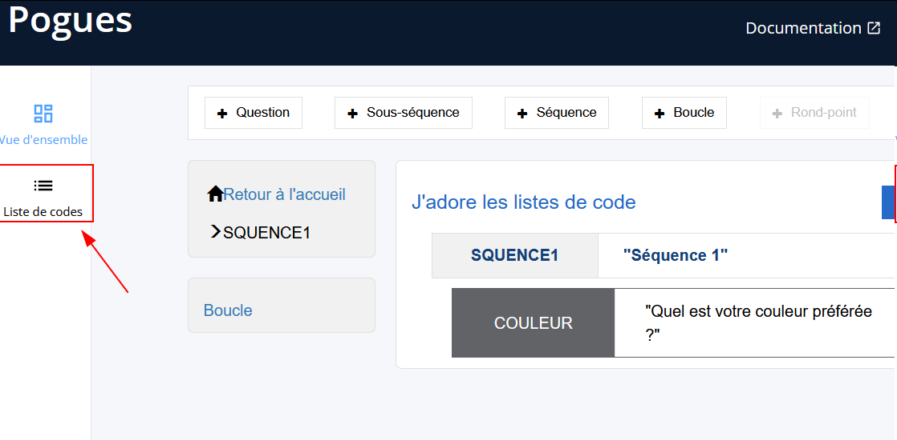
{kind=link}
On arrive ensuite sur la page de gestion des listes de codes du questionnaire
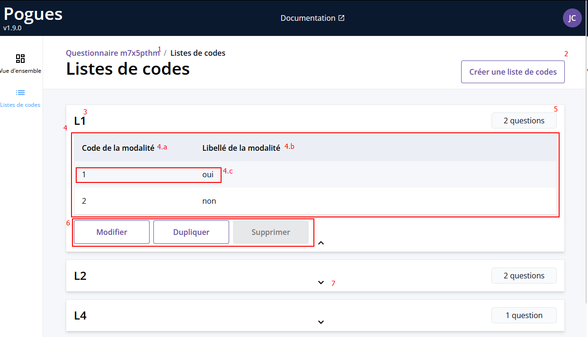
{kind=link}
Légende
Identifiantdu questionnaireBouton de créationd'une nouvelle liste de codesNomd'une liste de codesListe de codes- Colonne associée au
Codedes différentes modalités - Colonne associée au
Libellédes différentes modalités - Une
Modalitéavec ses valeurs associées (CodeetLibellé)
- Colonne associée au
-
Nombre de questionutilisant cette liste de codesUn clique ou un survol permet d'afficher la liste des questions.
-
Bouton pour
Modifier,DupliquerouSupprimerune liste de codes.La suppression est grisée car on na peut supprimer une liste de codes utilisée par des questions.
-
Flèche permettant de visualiser le
détaild'une liste de codes en ouvrant la fenêtre (possibilité à l'inverse de la fermée quand cette dernière est déjà ouverte).
Gérer les listes de codes
Toute modification/création/suppression d'une liste de codes va automatiquement créer une nouvelle version du questionnaire
Créer une nouvelle liste de codes
Après avoir appuyé sur le bouton de création d'une nouvelle liste de codes, la page suivante s'affiche
{kind=link}
Légende
Nomde la liste de codes- Une
ModalitéCodede la modalité avec un champ texteLibelléde la modalité avec un éditeurVTLAjouteruneModalitéenfant (voir gestion des niveaux)SupprimeruneModalité
Ajouterune nouvelleModalitéCréer(ouAnnuler) la liste de codes
Champs requis
Pour créer une liste de codes, il faut au moins
- Un nom
- Une modalité avec un code et un libellé (la formule VTL associée doit être valide)
Gestion des niveaux
Il est possible d'avoir plusieurs niveaux de modalités dans une même liste de codes
Les niveaux ne sont supportés que pour les tableaux et les QCM avec une liste de codes pour réponse (pas booléen). Le reste ne donne pas une bonne expérience utilisateur.
Ajouter des modalité "enfant"
Quand on clique sur le à droite de la modalité, cela ajoute une nouvelle modalité enfant.
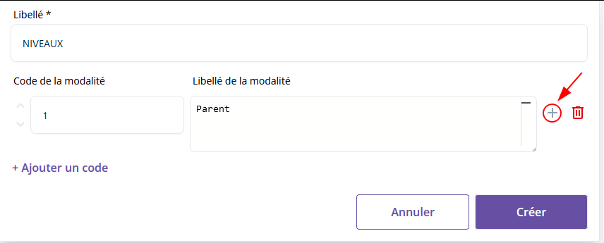
{kind=link}
{kind=link}
Si on clique encore sur ce même cela rajoute une deuxième modalité enfant
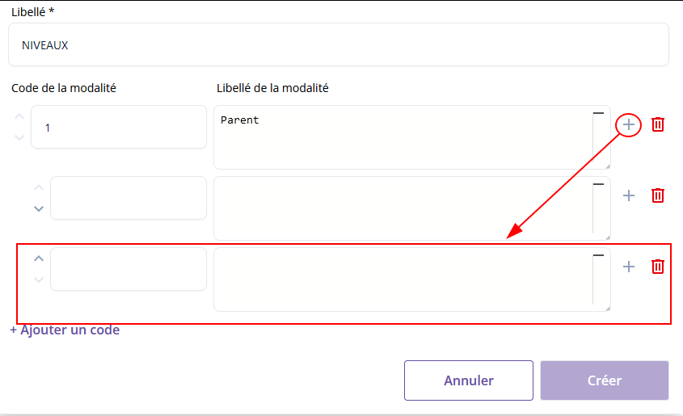
{kind=link}
En cliquant sur le de l'enfant on peut aller plus loin dans les niveau et avoir un enfant de l'enfant
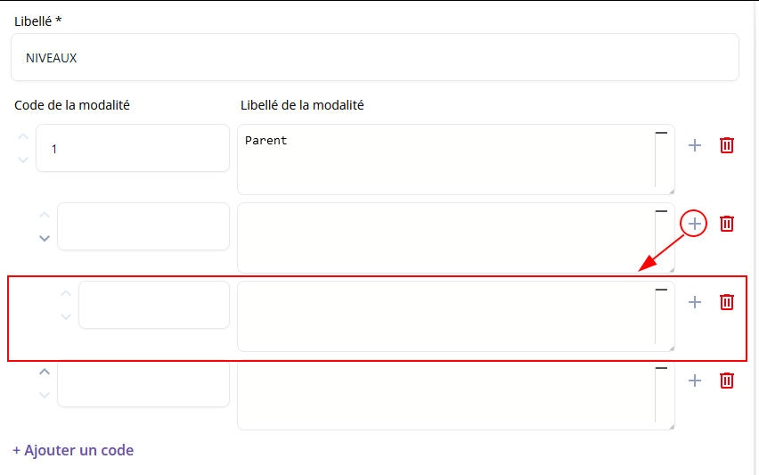
{kind=link}
Changer l'ordre des modalités
On peut facilement changer l'ordre des modalités ou en supprimer
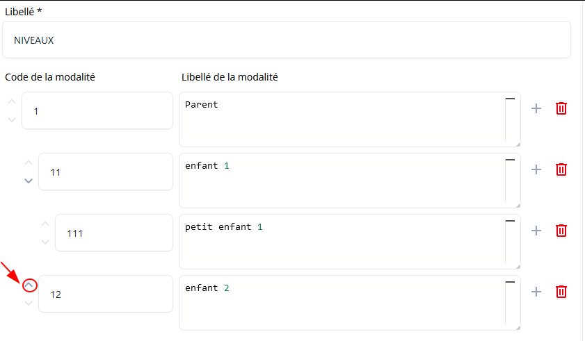
{kind=link}
{kind=link}
Supprimer une modalité avec des enfants
Quand on clique sur l'icone à droite de la modalité, cela la modalité parent avec tous ses enfants.
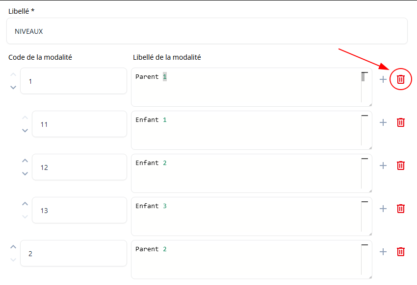
{kind=link}
{kind=link}
Exemple complet
{kind=link}
Éditer une nouvelle liste de codes
Une fois la liste de codes créée, on revient sur la page principale des listes de codes.
On peut ensuite, sur une liste de codes déjà existante, exécuter les actions suivantes
Modifier: Accède à la page de modification de liste de codesDupliquer: Crée une copie de la liste de codes et l'ajoute en bas de la liste-
Supprimer: Supprime la liste de codes.Supprimer une liste de codes utilisée dans une question
On ne peut pas supprimer une liste de codes utilisée par des questions. On peut voir quelles sont les questions concernées et il faut les modifier pour qu'elles n'utilisent plus cette liste de codes.
Un liste de codes associée à aucune question peut être supprimée.
La modification d'une liste de codes entraine la regénération des variables collectées associées aux questions concernées
Imaginons une question COULEUR qui est un QCM utilisant la liste de code L_COULEUR avec 3 modalités : "R", "B" et "J"
On aura alors par défaut les variables collectées COULEUR1, COULEUR2 et COULEUR3.
Pour plus de clarté on décide de les renommer COULEUR_R, COULEUR_B et COULEUR_J.
Si jamais on est amené à modifier L_COULEUR, en ajoutant une 4eme modalité par exemple "V", alors au moment où l'on valide cette modification, les variables collectées liées à COULEUR vont être régénérées et on aura 4 variables : COULEUR1, COULEUR2, COULEUR3 et COULEUR4.
⚠️ De plus tout filtre ou autre formule VTL se basant sur COULEUR_R, COULEUR_B ou COULEUR_J ne fonctionneront plus car les identifiants ont changé.
Utiliser une liste de codes dans un questionnaire
Lors de la création d'une question avec réponse à choix unique ou multiple, on peut sélectionner la liste de codes à associer avec le champ Choisir une liste de codes*
{kind=link}
{kind=link}
Ajouter un "Préciser"
Fonctionnalité non supportée pour les listes de codes avec des niveaux
Un seul Préciser par liste de codes associé à une question
Il suffit de cliquer sur le bouton 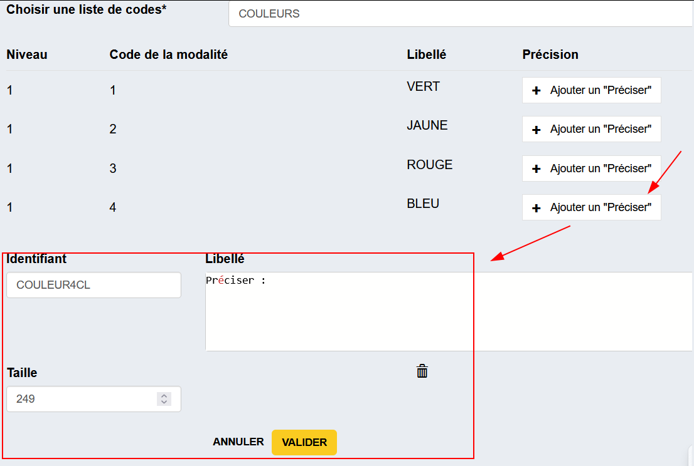Ajouter un "Préciser" puis d'indiquer son contenu dans le champ VTL Libellé qui est apparu.
{kind=link}
Le champ
Identifiantest généré automatiquement et peut être édité. La valeur saisie par l'enquêté est enregistrée dans cette variable.
Il suffit de cliquer sur le bouton d'édition
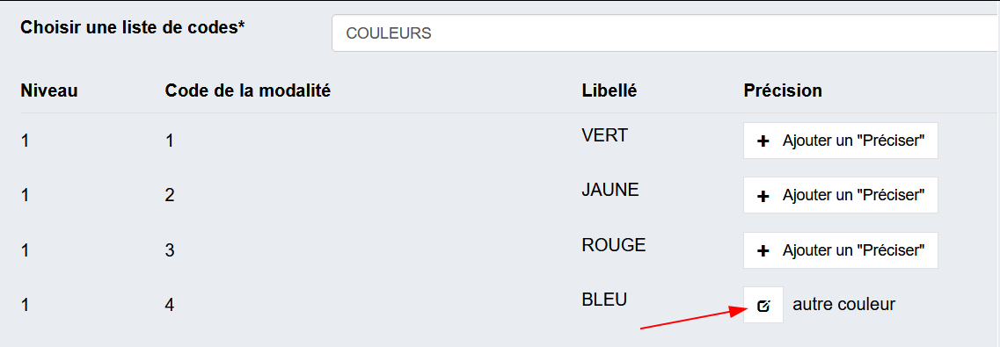
{kind=link}
Note
La demande de précision n'est pas associée à la liste de codes en elle-même mais bien à la question qui utilise cette liste de codes.
Ainsi pour une même liste de codes on peut avoir différents Préciser définis dans différentes questions.
✨ Filtrer une liste de codes
Il est possible de filtrer, pour des questions de type QCM (réponse booléenne uniquement) ou QCU, une liste de modalités selon une formule VTL.
Fonctionnalité non supportée pour les QCM avec réponses sous forme de batterie de questions
On renseigne le filtre dans un éditeur VTL accessible via le bouton 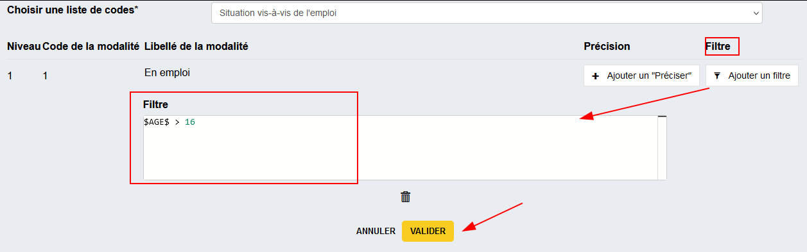Ajouter un filtre
{kind=link}
On peut l'éditer via le bouton d'édition
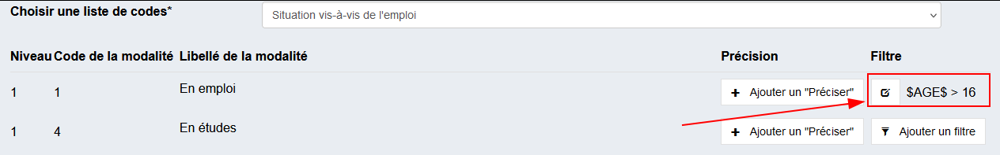
{kind=link}
La même logique que pour filtrer une question est appliquée : on propose un éditeur VTL conditionnant l'affichage de la modalité avec les règles suivantes :
| Validité de la Formule VTL | Condition d'affichage | Résultat |
|---|---|---|
| Pas de formule | / | la modalité est affichée |
| ❌ | ERROR |
la modalité est affichée |
| ✅ | TRUE |
la modalité est affichée |
| ✅ | FALSE |
la modalité n'est pas affichée |
Exemple
Imaginons la liste de code suivante
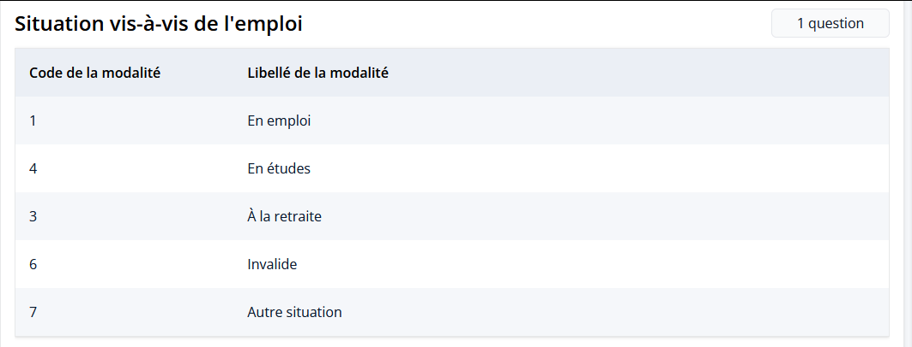
{kind=link}
- la modalité
En emploine s'affiche que si la variableAGEest supérieure à16 - la modalité
À la retraitene s'affiche que si la variableAGEest supérieure à62
{kind=link}
Ce qui donne les résultats suivants :
{kind=link}
{kind=link}
{kind=link}
{kind=link}